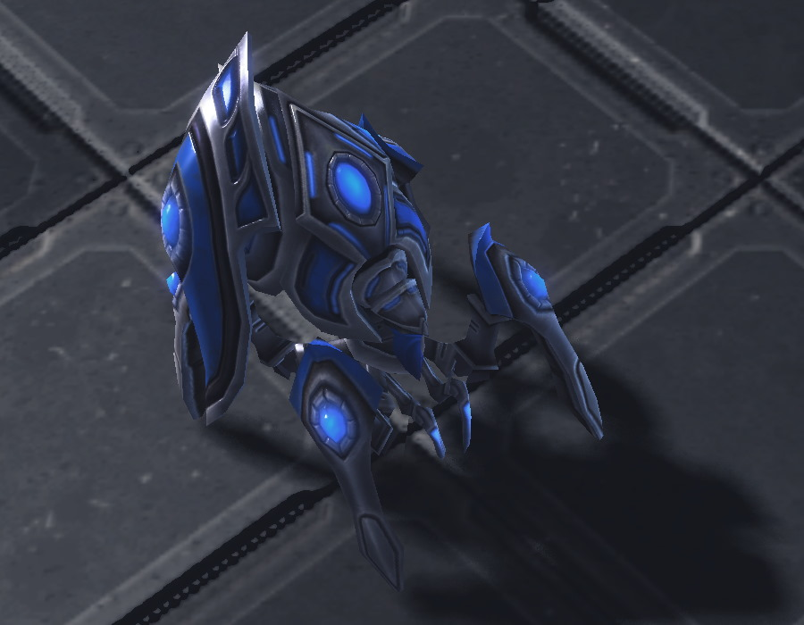
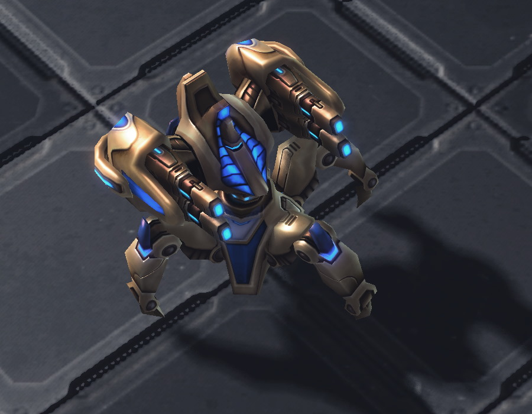
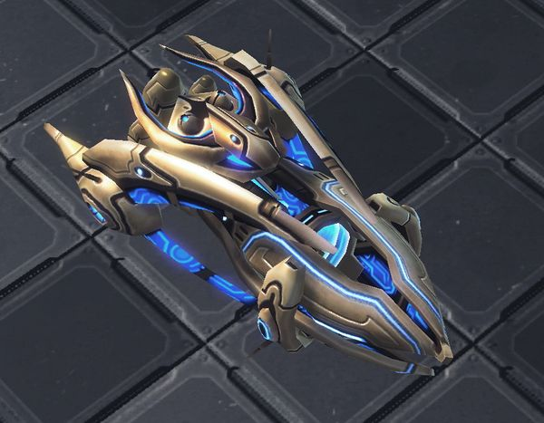

The Protoss faction in StarCraft 2 utilizes advanced technology and resilient units. Their Warpgate technology enables instantaneous unit deployment, facilitating swift reinforcement and strategic maneuvering. Protoss units feature energy-based shields that regenerate when not taking damage, necessitating careful engagement handling. Pylon placement is crucial as they power structures within their field. The tech tree branches into Gateway, Robotics Facility, and Stargate units, offering strategic versatility. Their arsenal includes units like the Immortal, known for its durability against heavy damage, alongside units with specialized abilities like Psi Storm and Force Fields for battlefield control. Mastery of these abilities, along with adept unit compositions and strategic positioning, defines successful Protoss gameplay.
Some Protoss Units

The Stalker
Anti-air/ground specialist with moderate health/speed. Strong against armored units, wields blink for tactical moves and engages in ranged combat.
The Zealot
High health, swift movement. Specializes in close combat, dealing significant damage to ground units. Its charge ability enables swift engagement with enemy forces, making it a formidable frontline fighter.

The Immortal
High health and shields. Excels against armored units, boasting a powerful ranged attack that deals bonus damage. It's shields enhance survivability in battle.

The Carrier
Essential for Protoss late-game, launches Interceptors for relentless air-to-ground assaults. Dominates late-game battles, crucial for air superiority and ground assaults from afar.